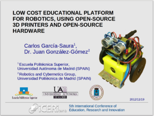
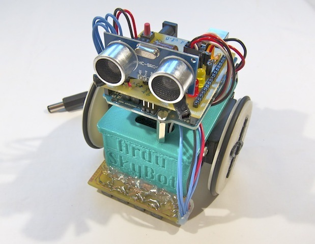

|  (click to enlage) |
Paper reference
- Carlos García-Saura, Juan González-Gómez, "Low cost educational platform for robotics, using open-source 3D printers and open-source hardware". Proceedings of ICERI2012 Conference 19th-21st November 2012, Madrid, Spain, pp: 2699 - 2706. ISBN: 978-84-616-0763-1
Abstract
In this paper, we present a new design methodology for educational robotic platforms. Using printbots (open-source 3D-printable robots) as a starting point in our designs has allowed us to create custom robots with very little effort. Using this new methodology we have designed the ArduSkybot, a robot that has enough features for its usage at different educational levels while keeping a very reduced cost. The robot is based on Arduino and the Printshield, our new electronics platform. It provides integration of various sensors (light, distance and line sensors) and actuators (motors, lights and speaker). It is also easy to expand by students and researchers. We describe our designs, and document their performance in various workshops with college, primary and secondary students. Our methodology is described and suggestions are given regarding future printbot-based workshops
Authors
- Carlos García Saura
- Juan González-Gómez
- Oral presentation: Carlos García Saura
Printbots. Family *skybot
|
 Arduskybot |


Download
| ICERI_2012-Printbots_for_education.pdf | Paper (PDF) |
| ICERI_2012-Printbots_for_education.odt | Paper sources (Libre-office) |
| 2012-11-19-ICERI-Printbots_for_education_slides.pdf | Presentation slides. PDF |
| 2012-11-19-ICERI-Printbots_for_education.odp | Presentation Slides sources (Libre-office) |
Links
- ICERI 2012
- Blog entry in Carlos' page about this paper
News
- 2012/Nov/26th: This page is published!